The tests for the DC side and auxiliary systems are largely similar, but because commercial and industrial energy storage cabinets integrate two additional devices—PCS and EMS—they differ slightly during the power-on commissioning phase.
Analysis of Testing Differences between Industrial and Commercial Storage Lockers and Energy Storage Battery Compartments
As the mainstream form of distributed energy storage in industrial and commercial parks, factories, data centers, and commercial complexes, the core value of industrial and commercial energy storage cabinets lies in their ability to achieve peak-valley arbitrage, peak shaving and valley filling, demand control, and backflow prevention through the energy conversion of the PCS and the automatic control strategy scheduling of the EMS. The core advantage is its high degree of integration and plug-and-play capability.
Unlike the "multi system separate integration" of containerized energy storage compartments (where the battery compartment, PCS compartment, and EMS are independently integrated), mainstream industrial and commercial energy storage cabinets integrate battery clusters, high-voltage boxes, PCS, EMS, thermal management systems, fire protection systems, and auxiliary power distribution systems all into a single cabinet. Once transported to the site, they only need to be connected to the network cable and grid connection cable to be put into operation, which greatly reduces the on-site installation and commissioning costs.
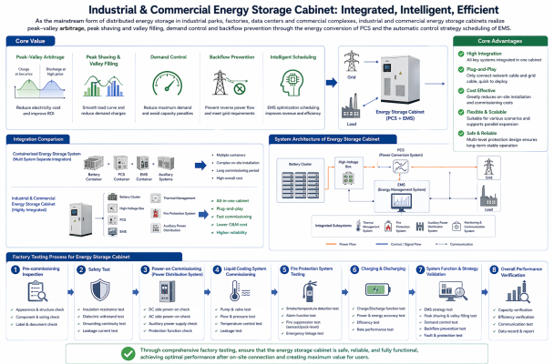
Because the cabinet integrates two core components, PCS and EMS, the factory testing of industrial and commercial energy storage cabinets differs somewhat from that of containerized energy storage compartments. Similar to energy storage battery compartments, they also require pre-commissioning checks, safety tests, power-on commissioning of the power distribution system, commissioning of the liquid cooling system, testing of the fire protection system, charging and discharging tests, etc.
However, for communication-related testing, the core control center of the system changes from the BMS in the container to the EMS (in fact, the EMS in industrial and commercial storage is similar to the BAU in the battery compartment, but it manages not only the DC side but also the AC testing equipment). Therefore, in addition to some communication tests and DIDO tests, the system must also verify the collaborative control capability of the entire "battery-BMS-PCS EMS" link.
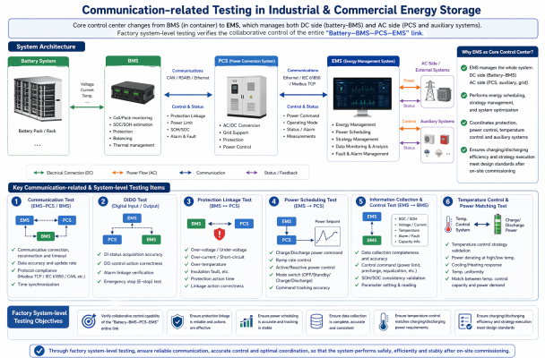
The protection linkage between BMS and PCS, the power scheduling of EMS to PCS, the information collection and control of EMS to BMS, and the matching of temperature control system and charging and discharging power must all be verified through factory system-level testing to ensure that the charging and discharging efficiency and strategy execution accuracy fully meet the design standards after on-site commissioning.
List of Factory Test Items for Industrial and Commercial Energy Storage Cabinets
The factory testing of industrial and commercial energy storage cabinets, like the overall testing of energy storage modules, follows the principle of static testing before dynamic testing, low-voltage testing before high-voltage testing, individual component testing before system testing, and safety testing before performance testing.
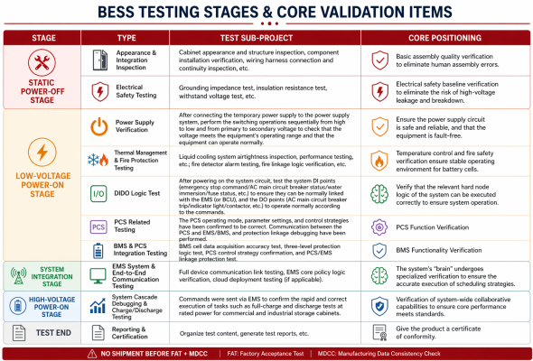
Comprehensive Analysis of Core Test Items
For industrial and commercial energy storage projects, the relevant testing methods and tools for pre-power-on inspections, fire protection, thermal management, DIDO, etc., are similar to those for large-scale energy storage projects (related insulation and withstand voltage tests should be adjusted according to the actual voltage level to meet national standards).
Preparation phase before system integration testing
- The system has completed pre-power-on checks, safety tests, system power-on tests, liquid cooling system tests, fire protection system tests, and DIDO tests, and all test results are qualified.
2. The BMS, PCS, and EMS have all completed the latest software upgrades and the strategies have been configured, meeting the operating conditions of the energy storage cabinet.
3. PCS Basic Communication and Hardware Status Testing
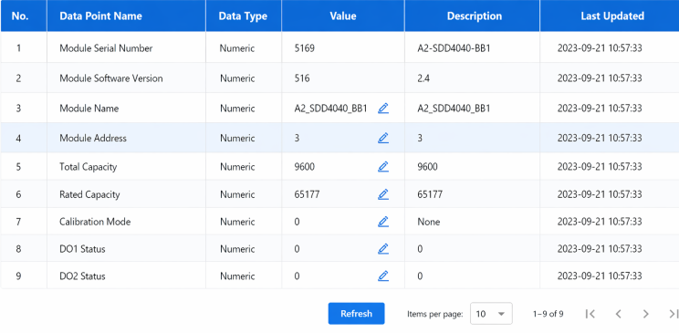
Testing tools: Laptop, PCS dedicated debugging software, multimeter
Test method: Power on the PCS auxiliary control power supply, establish communication with the PCS through debugging software, read the hardware version and software version, and monitor hardware parameters such as IGBT temperature, DC bus voltage, contactor status, and capacitor voltage in real time.
Acceptance criteria: Stable and uninterrupted communication, hardware version consistent with design, and no alarm messages such as IGBT faults, voltage abnormalities, or communication timeouts.
Core function: To confirm that the PCS's basic communication and hardware status are normal, in preparation for subsequent high-voltage and joint debugging tests.
4. BMS communication and Level 3 protection verification
Testing tools: laptop, CAN box, BMS host computer, etc
Test method:
- Check that the internal communication of the BMS is normal and that the host computer can read all data information from the battery side.
- Ensure that communication between BMS and PCS, EMS, etc., is normal.
- The host computer adjusts the relevant parameters of the three-level protection inside the BMS, and the host computer can read the corresponding alarm status, which is consistent with the parameters.
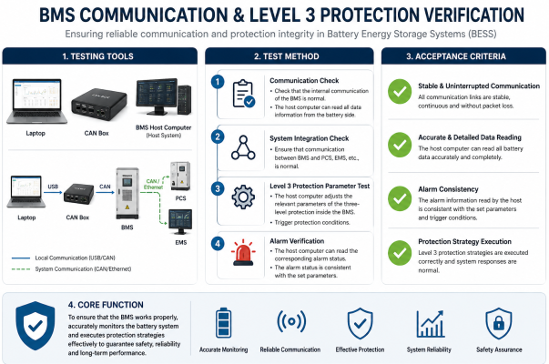
5. Acceptance criteria: Stable and uninterrupted communication, accurate and detailed battery information reading, and normal execution of protection strategies.
6. Core function: To ensure that the BMS works properly.
Full device communication link test
Testing tools: Laptop, Modbus debugger, CAN box, network cable tester
Test method: Through the EMS host computer, the end-to-end communication with BMS, PCS, gate electricity meter, liquid chiller, fire alarm control panel and temperature and humidity sensor was tested, covering three communication methods: RS485/CAN/Ethernet, to verify data acquisition accuracy, command issuance response speed and communication stability.
Acceptance criteria: All equipment data is complete and without missing data; analog quantity acquisition cycle ≤ 1s; digital quantity command issuance response time ≤ 500ms; continuous 24-hour communication without interruption or data jumps.
Core function: To ensure that EMS can accurately collect data from the entire system and reliably issue control commands, which is the foundation for policy execution.
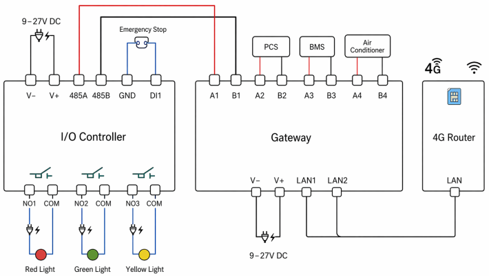
EMS core strategy logic testing
Test tools: HMI touchscreen, power grid simulation source, programmable test platform
Test method:
- Peak-valley arbitrage strategy: Simulate peak and off-peak electricity price periods to verify the logic accuracy of EMS charging and discharging start-up and shutdown and power regulation.
- Anti-reverse current strategy: Simulate reverse current signals on the grid side to verify the EMS's power reduction and shutdown logic for the PCS and test the response speed.
- Demand control strategy: Simulate load power exceeding the demand threshold to verify the charging and discharging regulation logic of the EMS.
- Off-grid emergency strategy: Simulate a power outage to verify the logic of EMS controlling PCS to switch to off-grid mode and ensure power supply to critical loads.
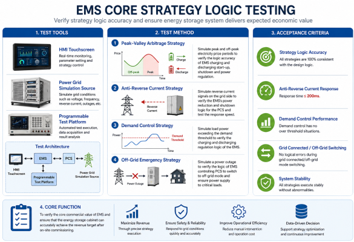
Acceptance criteria: All strategies are 100% consistent with the design logic; anti-backflow response time is ≤200ms; demand control has no over threshold situations; and there are no logical errors during grid connected/off-grid switching.
Core function: To verify the core commercial value of EMS and ensure that the energy storage cabinet can accurately achieve the revenue target after on-site commissioning.
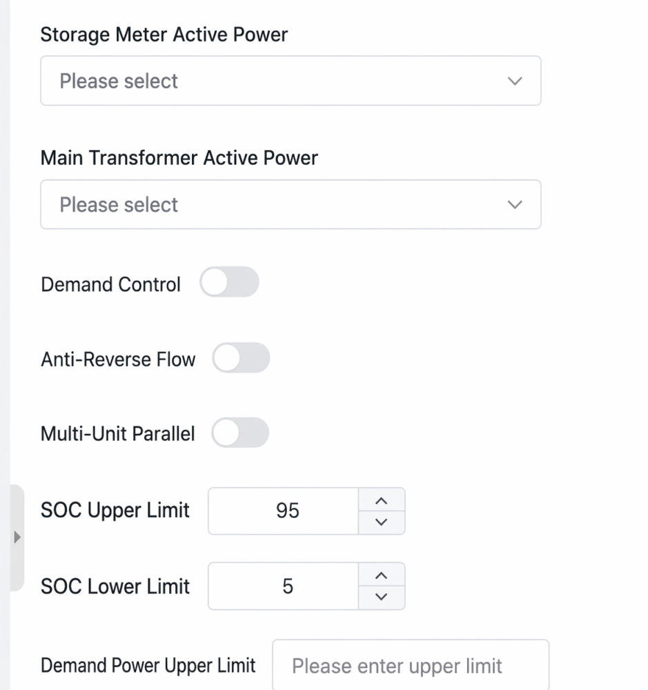
Cloud platform integration test
Testing tools: Laptop, cloud platform backend.
Test methods: Test the storage capacity of EMS local historical data, SOE event logs, and alarm logs, as well as the integrity of data transmission after network outage and data upload to the cloud; test the parameter setting, status viewing, and operation control functions of the local touch screen.
Acceptance criteria: Data is uploaded to the cloud without loss or delay and can be automatically re-uploaded after network outage; the interface operation is smooth, the permission hierarchy is clear, and there are no unauthorized operations.
Core function: To ensure the convenience and safety of on-site operation and maintenance.
System Cascade Debugging and Full Charge/Discharge Process Testing
This is the final verification of the overall system coordination capability of the energy storage cabinet. It must be carried out after all individual tests are passed. The core is to simulate the actual on-site operating scenario and complete the full-process charging and discharging verification.
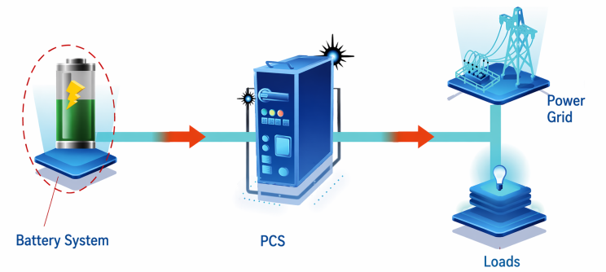
Testing tools: BMS/EMS/PCS host computer, PC
Test methods: Complete the full power-on process of the system, set the corresponding charging and discharging power and time through EMS, and adjust the charging and discharging power from small to large to the rated power for charging and discharging tests. Run each power for a short time and perform a full charge and discharge test at the rated power (preferably 3 times); monitor the cell voltage, temperature, PCS operating status, and EMS strategy execution in real time, and calculate the system efficiency.
Qualification Standard: The entire charge and discharge process is free of fault alarms and abnormal shutdowns; the charge and discharge power control is accurate, and the system efficiency meets the design requirements.
Core Role: The collaborative operation capability of the entire "battery-BMS-PCS EMS" system was fully verified to ensure that the core performance of the energy storage cabinet fully meets the design standards.
Precautions and Handling of Frequently Asked Questions During Testing
Precautions during the testing process
Commercial and industrial energy storage cabinets are compact in space and densely packed with high-voltage components. Therefore, the following specifications must be strictly adhered to during testing to prevent equipment damage and safety accidents:
Strictly adhere to the testing procedures and strictly prohibit unauthorized operations.
Strict adherence to procedures is required. Proceeding to the next stage is strictly prohibited until all preceding tests are completed and passed. In particular, it is strictly forbidden to apply high voltage to the PCS without performing insulation testing, in order to avoid IGBT breakdown and damage.
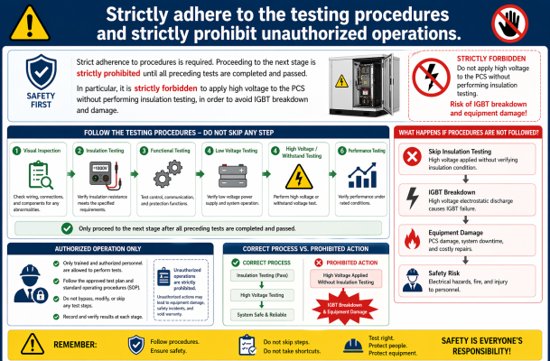
High-voltage testing requires proper device protection.
Before insulation and withstand voltage tests, sensitive electronic components such as the PCS control board, surge protector, and EMI filter must be disconnected, and the gate and emitter of the IGBT must be short-circuited to prevent high voltage electrostatic discharge from damaging the power devices.
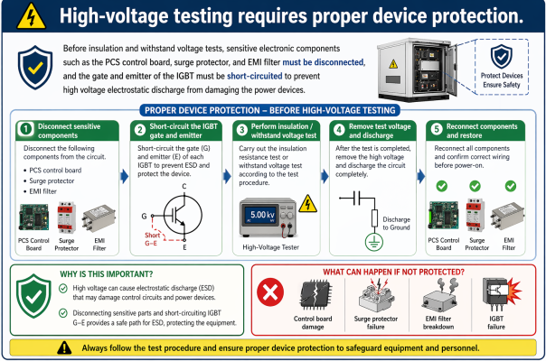
The entire charge and discharge test was monitored by dedicated personnel.
The cabinet space is compact, and the risk of thermal runaway of the battery cells is much higher than that of split-type energy storage systems. During the charging and discharging test, a dedicated person must be on duty at all times to monitor the battery cell voltage, temperature and insulation resistance in real time. If any abnormality occurs, the emergency stop button must be pressed immediately to terminate the test.
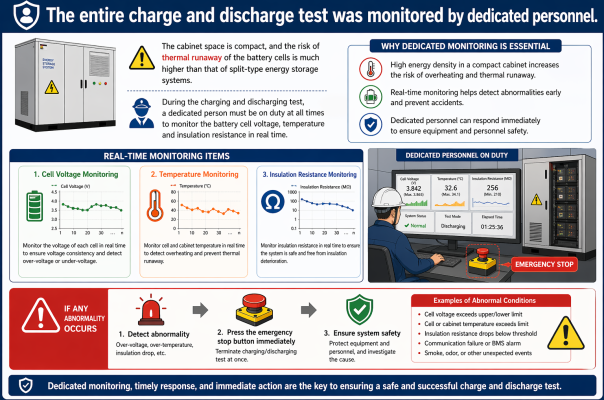
Fire safety testing must be conducted with appropriate protective measures.
Before conducting a fire alarm linkage test, the solenoid valve of the fire extinguishing device must be removed and the safety pin inserted. It is strictly forbidden to conduct a linkage test with fire extinguishing agents inside. The space inside the cabinet is small, and accidental spraying will cause all electronic components to become damp and damaged, and they will be irreparable.
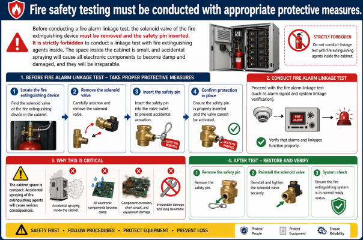
Test data is fully traceable
All test items must be recorded in real time by designated personnel, and standardized test record forms must be filled out. Any non-conforming items must be rectified in a closed loop and retested. All test records, rectification records, and retest records must be archived and retained.
Analysis of Frequently Asked Questions and Standardized Handling Procedures During Testing
Based on actual implementation in industry factory testing, we have identified the six most common problems encountered during the factory testing of industrial and commercial energy storage cabinets, clarifying their phenomena, root causes, and standardized handling methods:
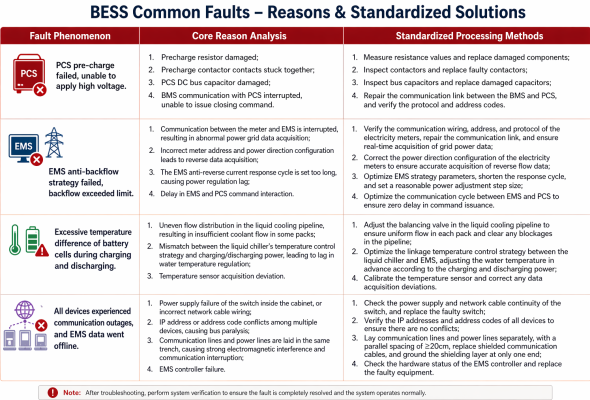
Conclusion
The factory testing of industrial and commercial energy storage cabinets verifies not only the performance of individual components but also the coordinated control capabilities of the entire system. Only by completing the entire process of standardized testing in the factory can industrial and commercial energy storage cabinets truly achieve "plug and play," enabling smooth grid connection and stable operation after the equipment arrives on site, and accurately realizing the commercial value of peak-valley arbitrage and demand control.